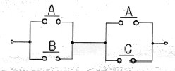
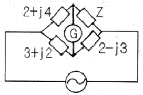
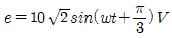
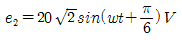
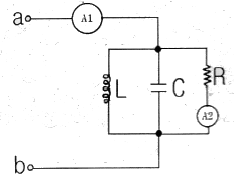
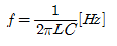
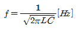
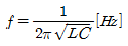
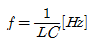
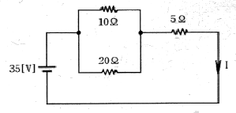

1과목: 소방원론
1. 다음 중 분진폭발을 일으킬 가능성이 가장 낮은 것은?
2. 불활성 가스에 해당하는 것은?
3. 제1류 위험물에 해당하는 것은?
4. 메탄 80vol%, 에탄15vol%, 프로판 5vol% 인 혼합가스의 공기 중 폭발 하한계는 약 몇 vol% 인가? (단, 메탄, 에탄, 프로판의 공기 중 폭발 하한계는 5.0%, 3.0%, 2.1% 이다.)
5. 탄화칼슘의 화재시 물을 주수하였을 때 발생하는 가스로 옳은 것은?
6. 탄산수소나트륨이 주성분인 분말소화약제는 제 몇 종 분말인가>
7. 건축물의 피난ㆍ방화구조 등의 기준에 관한 규칙에 따르면 철망모르타르로서 그 바름두께가 최소 몇 cm 이상인 것을 방화구조로 규정하는가?
8. 피난계획의 일반원칙 중 fool proof 원칙에 해당하는 것은?
9. 갑작스런 화재 발생시 인간의 피난 특성으로 틀린 것은?
10. 0℃, 1기압에서 44.8m3 의 용적을 가진 이산화탄소가스를 액화하여 얻을 수 있는 액화탄산가스의 무게는 몇 kg 인가?
11. 열에너지가 물질을 매개로 하지 않고 전자파의 형태로 옮겨지는 현상은?
12. 피난계획의 기본 원칙에 대한 설명으로 옳지 않은 것은?
13. 화재 급수에 따른 화재 분류가 틀린 것은?
14. 금수성 물질에 해당하는 것은?
15. 건축물의 주요 구조부에 해당되지 않는 것은?
16. 가연물이 되기 위한 조건으로 가장 거리가 먼 것은?
17. 위험물안전관리법령상 과산화수소는 그 농도가 며 중량 퍼센트 이상인 경우 위험물에 해당하는가?
18. 소화효과를 고려하였을 경우 화재시 사용할 수 있는 물질이 아닌 것은
19. 일반적으로 공기 중 산소농도를 몇 vol% 이하로 감소시키면 연소상태의 중지 및 질식소화가 가능하겠는가?
20. 공기의 평균 분자량이 29 일 때 이산화탄소의 기체 비중은 얼마인가?
2과목: 소방전기회로
21. 그림과 같은 유접점회로의 논리식은?

22. 기계적인 변위의 한계부근에다 배치해 놓고 이 스위치를 누름으로서 기계를 정지하거나 명령신호를 내는데 사용되는 스위치는?
23. 조작기기는 직접 제어대상에 작용하는 장치이고 응답이 빠른 것이 요구된다. 다음 중 전기식 조작기기가 아닌 것은?
24. 전기기기에 생기는 손실 중 권선의 저항에 의하여 생기는 손실은?
25. 다음 사항 중 직류전동기의 제동법이 아닌 것은?
26. RC 직렬회로에서 R = 100[Ω], C = 5[μF] 일 때 e=220√2sin377t인 전압을 인가하면 이 회로의 위상치는 대략 얼마인가?
27. 그림과 같은 브리지 회로가 평형이 되기 위한 Z의 값은 몇 [Ω] 인가? (단, 그림의 임피던스 단위는 모두 Ω이다.)

28. 3상3선식 전로에 접속하는 Y결선의 평형 저항부하가 있다. 이 부하를 △결선하여 같은 전원에 접속한 경우의 선전류는 Y결선을 할 때 보다 어떻게 되는가?
29. 전자유도현상에 의하여 생기는 유도기전력의 크기를 정의하는 법칙은?
30. 동작신호를 조작량으로 변환하는 요소로소 조절부와 조작부로 이루어진 요소는?
31. 소화설비의 기동장치에 사용하는 전자(電磁)솔레노이드에서 발생되는 자계의 세기는?
32. 제어량을 어떤 일정한 목표값으로 유지하는 것을 목적으로 하는 제어법은?
33. 시퀀스제어에 관한 설명 중 옳지 않은 것은?
34. 전압변동율이 10% 인 정류회로에서 무부하 전압이 24V 인 경우 부하시 전압은 몇 [V] 인가?
35.

와
정현파의 합성전압 e는 약 몇 [V] 인가?36. 그림과 같은 회로에서 단자 a, b사이에 주파수 f[Hz]의 정현파 전압을 가했을 때 전류계 A1, A2의 값이 같았다. 이 경우 f, L, C 사이의 관계로 옳은 것은?





37. 단상변압기의 3상 결선중 △-△결선의 장점이 아닌 것은?
38. 어떤 회로 소자에 전압을 가하였더니 흐르는 전류가 전압에 비해 π/2만큼 위산이 느리다면 사용한 회로소자는 무엇인가?
39. 그림과 같은 회로에서 흐르는 전류는 I는 몇 [A] 인가?

40. 변압기 결선에서 제3고조파가 발생하여 통신선에 영향을 주는 결선은?
3과목: 소방관계법규
41. 소방용 ㆍ기구 중 우수품질에 대하여 우수품질인증을 할 수 있는 사람은?
42. 한국소방안전협회의 업무와 거리가 먼 것은?
43. 소방시설관리업의 등록기준 중 보조 기술인력에 해당되지 않는 자는?
44. 연면적 5000m2 미만인 특정대상물에 대한 소방공사감리원 배치기준은?
45. 제4류 위험물을 저장하는 위험물제조소의 주의사항을 표시한 게시판의 내용으로 적합한 것은?
46. 방화관리대상물의 관계인은 소방훈련과 교육을 실시한 때에는 그 실시결과를 소방훈련ㆍ교육실시결과기록부에 기재하고 이를 몇 년간 보관하여야 하는가?
47. 특정소방대상물의 근린생활시설에 해당되는 것은?
48. 위험물 제조소에는 보기 쉬운 곳에 기준에 따라 “위험물제조소” 라는 표시를 한 표지를 설치하여야 하는데 다음중 표지의 기준으로 적합한 것은?
49. 소방시설공사의 착공신고 대상이 아닌 것은?
50. 특수가연물에 해당되지 않는 물품은?
51. 소방기본법에 의하여 5년 이하의 징역 또는 3천만원이하의 벌금에 해당하는 위반사항이 아닌 것은?(관련 규정 개정전 문제로 여기서는 기존 정답인 1번을 누르면 정답 처리됩니다. 자세한 내용은 해설을 참고하세요.)
52. 종합상황실장의 업무와 직접적으로 관련이 없는 것은?
53. 특정소방대상물이 증축되는 경우 소방시설기준 적용에 관한 설명 중 옳은 것은?
54. 제조소등의 위치ㆍ구조 또는 설비의 변경 없이 당해 제조소등에서 저장하거나 취급하는 위험물의 품명ㆍ수량 또는 지정수량의 배수를 변경하과 할 때는 누구에게 신고하여야 하는가?
55. 형식승인을 얻지 아니한 소방용기계ㆍ기구를 판매할 목적으로 진열했을 때의 벌칙으로 옳은 것은?(관련 규정 개정전 문제로 기존 정답은 1번이었습니다. 여기서는 1번을 누르면 정답 처리 됩니다. 자세한 내용은 해설을 참고하세요.)
56. 위험물안전관리법에 의하여 자체소방대를 두는 제조소로서 제 4류 위험물의 최대수량의 합이 지정수량 24만배 이상 48만배 미만인 경 보유하여야 할 화학소방자동차와 자체소방대원의 기준으로 옳은 것은?
57. 스프링클러설비 또는 물분무등소화설비가 설치된 연면적 5000m2 이상인 특정소방대상물(위험물제조소 등을 제외한다)에 대한 종합정밀점검을 할 수 있는 자격자로서 옳지 않은 것은?
58. 소방본부장 또는 소방서장은 건축허가 등의 동의요구서류를 접수한 날부터 며칠 이내에 건축허가 등의 동의여부를 회신하여야 하는가? (단, 허가신청한 건축물 등의 연면적이 3만m2 이상인 경우)
59. 제4류 위험물 제조소의 경우 사용전압이 22kV 인 특고압가공전선이 지나갈 때 제조소의 외벽과 가공전선 사이의 수평거리(안전거리)는 몇 [m] 이상이어야 하는가?
60. 방염성능기준 이상의 실내장식물을 설치하여야 하는 대상물로서 틀린 것은?
4과목: 소방전기시설의 구조 및 원리
61. 비상방송설비의 배성과 관련해서 부속회로의 전로와 대지사이 및 배선 상호간의 절연저항은? (단, 1경계구역마다 직류 250V의 절연저항측정기를 사용하여 측정)
62. 소방시설용 비상전원수정설비에서 소방회로 및 일반회로 겸용의 것으로서 수전설비, 변전설비 그 밖의 배선을 금속제 외함에 수납한 것을 무엇이라 하는가?
63. 축광식 위치표지는 주위 조도 0 lx 에서 60분간 발광 후 직선거리 몇 [m] 떨어진 위치에서 보통시력으로 표시면의 문자 또는 화살표 등을 쉽게 식별할 수 있는 것으로 하여야 하는가?
64. 비상콘센트의 배치는 아파트 또는 바닥면적이 1000m2미만인 층에 있어서 계단의 출입구(계단의 부속실을 포함하여 계단이 2 이상 이쓴 경우에는 그 중 1개의 계단을 말한다)로 부터 몇 [m] 이내에 설치하여야 하는가?
65. 누전경보기의 수신부를 설치할 수 있는 장소는?
66. 휴대용비상조명등의 설치기준에 접합하지 않은 것은?
67. 다음 중 비상콘센트설비의 전원공급회로의 설치기준으로 틀린 것은?
68. 누전경보기의 화재안전기준에서 변류기의 설치위치로 옳은 것은?
69. 자동화재탐지설비의 경계구역설정의 기준으로 옳은 것은?(관련 규정 개정전 문제로 여기서는 기존 정답인 3번을 누르면 정답 처리됩니다. 자세한 내용은 해설을 참고하세요.)
70. 비상방송설비에서 우선경보방식을 적용하여야 할 소방대상물은? (단, 소방대상물 연면적은 3000m2 을 초과한다.)
71. 천장의 높이가 2m이하인 경우에 청각장애인용 시각경보장치는 다음 중 어떤 위치에 설치해야 하는가?
72. 피난구유도등에 관한 설명으로 옳지 않은 것은?(관련 규정 개정전 문제로 여기서는 기존 정답인 2번을 누르면 정답 처리됩니다. 자세한 내용은 해설을 참고하세요.)
73. 누전경보기의 음향장치의 설치 위치는?
74. 무선통신보조설비에 대한 설명으로 잘못된 것은?(오류 신고가 접수된 문제입니다. 반드시 정답과 해설을 확인하시기 바랍니다.)
75. 정온식감지선형 감지기의 감지선이 늘어지지 않도록 하기 위하여 사용하는 것은?
76. 다음 비상방송설비의 설치 및 시공 내용 중 적법하지 않은 것은?
77. 원칙적으로 집회장에 설치하지 않아도 되는 유도등은?
78. 분말소화설비의 비상전원의 기준으로 옳지 않은 것은?
79. 무선통신보조설비에서 지상에 설치하는 무선기기 접속단자는 보행거리 몇 [m] 이내마다 설치하여야 하는가?
80. 다음 중 자동화재속보설비의 예비전원 시험방법으로 알맞은 것은?